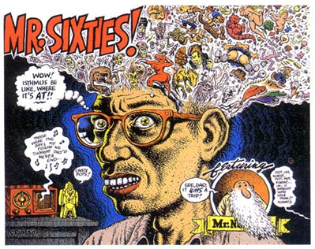
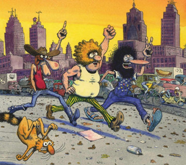
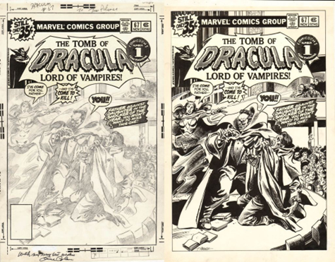

Dots by Any Other Name
The Story of Shatter, the first Digitally Produced Comic Book
Marin Balabanov
I. The Subversive Core of Comics
"Any startling piece of work has a subversive element in it, a delicious element often. Subversion is only disagreeable when it manifests in political or social activity."
- Leonard Cohen
In the 1960s American comics changed. They were always regarded as shrill, cheap, and trashy, with dropping sales in the past decade. Yet at their core, they became subversive, in tune with the rising counterculture of the 1960s. This decade brought a cultural explosion: questioning traditional modes of authority, protests against the war in Vietnam, a vocal youth culture, new music, widespread social tensions, liberated sexuality, women's rights, experimentation with psychoactive drugs[1].
In his seminal work Understanding Comics: The Invisible Art[2] , Scott McCloud describes comics as "juxtaposed pictorial and other images in a deliberate sequence, intended to convey information and/or produce an aesthetic response in the viewer."
As an art form, they were much more than that; they were an echo of the world around them. And in the 1960s they transformed along two different lines: commercial comics and the "comix underground."
How to Draw Comics the Marvel Way
By the 1960s "mainstream" comics were firmly set in the superhero genre. DC Comics, the industry's top dog, with its stable of superheroes such as Batman, Superman, and Wonder Woman was being challenged by upstart Marvel comics. The work of writer Stan Lee and artists Jack Kirby and Steve Ditko subverted the comics mainstream that was traditionally oriented towards children. They introduced superheroes who appealed to older readers, breaking convention with other archetypes of the time by showing characters with personal flaws, who quarreled with their peers, and who lived in the eventful world of the 1960s.

Figure 2: Black Bolt of the Inhumans in a panel from Fantastic Four #59 by Jack Kirby (pencils) and Joe Sinnott (inks).
In American Experiences: Readings in American History: Since 1865, Randy Roberts and James S. Olson wrote that "Marvel Comics employed a realism in both characterization and setting in its superhero titles that was unequaled in the comic book industry."[3]

Figure 3: Psychedelic panel from Silver Surfer #1 by John Buscema (pencils) and Joe Sinnott (inks).
In comics series such as Fantastic Four, Doctor Strange, and Silver Surfer, Kirby, Ditko, and Lee plotted grand "cosmic" ideas about extraterrestrial civilizations, different dimensions, personified embodiments of abstract notions, whole human cultures hidden from the world, and alien gods. Many of these concepts were exaggerated ideas previously encountered in science fiction, but the way the Marvel artists depicted it, much of the imagery was psychedelic and on a cosmic scale.
The comics published at Marvel managed the then unique bridge between the absurdly grand and the humbly human. Simply put, Marvel comics were a breath of fresh air.
Drawing from the Underground
The second component of the one-two punch of the comics renaissance of the 1960s was underground comix (yes, spelled with an "x"). These small-press or self-published comic books often covered socially relevant issues in a satirical manner. Their art style flew in the face of the established superhero comics, ranging from deliberately dilettante to classically rendered or even caricature. Underground comix were not bound by the restrictions of other printed media, often openly depicting sexuality, explicit drug use, and violence.

Figure 4: Piece drawn in ink by artist Robert Crumb from The Complete Crumb Comics Vol. 4: "Mr. Sixties!"
The main progenitors on the comix underground were Robert Crumb, Gilbert Shelton, Trina Robbins, Gary Panter, Barbara "Willy" Mendes, and many other artists who spread their work in the counterculture scene.
The genre featured strips such as Frank Stack's The Adventures of Jesus in 1962 and Gilbert Shelton's Wonder Wart-Hog, as found in college-humor magazine Bacchanal #1-2 in the same year. Robert Crumb self-published Zap Comix in San Francisco in 1968. Many titles covered subjects as widely varied as politics and pornography.[4]

Figure 5: Gilbert Shelton's Freak Brothers.
Underground comix subverted the limitations of the comics medium and brought a new energy and inspiration to the cultural mainstream.
Technology and Art
To a certain extent, it is fair to say that drawing and distributing comics is not merely a function of art but very much of technology. It only became feasible to easily produce and distribute comic books once the process of printing became widely enough available and cheap enough to warrant it.
One of the reasons for the widespread adoption of comic books as a creative outlet was that creating a comic book took far fewer resources than other mediums. Making a movie back in the 1960s was an expensive and time-consuming endeavor, and getting a film distributed was often an insurmountable hurdle for fledgling filmmakers.
To create a comic book, all you needed were pencil and paper, pen and ink . . . and something to say, a story to tell. Of course, if you wanted to touch the souls of your readers, you also needed talent. Even in the 1960s, finding and paying for a printer for the low print runs in black and white on cheap paper was feasible, if not always easy. To get something printed in color was far more expensive, and you would usually have to go to an established publisher.
Underground artists could distribute their finished product themselves by using the many record stores or comics specialty shops in large metropolitan areas. Established publishers could default to newsstand distribution or mainstream retail outlets.

Figure 6: A pencilled comic panel before it was inked and lettered (Jack Kirby, 1978).
No Creative Limits
While printing technology and publishing have evolved over time, the core process of creating comics has not changed a lot. You tell a story in panels, usually rectangular sections that progress across the page with glimpses of what is happening with characters, objects, and locations drawn in them. Exposition and dialogue are lettered into boxes and speech bubbles. You even have a mechanism to show the thoughts of characters as clouds hovering close to their heads.
Potentially, it only takes a single writer-artist to create a comic story. The creator thinks of a story plot and sketches it out roughly, either as thumbnail images or directly on the page where they will draw the artwork. Usually, the original artwork is in a format much larger than the printed result; the process of reducing it in print brings out the details.
While a single individual could do everything themselves, and many have in the past, the process is most likely split up among more creators. A writer would write the plot and the dialog. A penciler sketches out the character, settings, and locations in the panels on a page, focusing on getting proportions and perspective right and telling the story the writer describes in their script. The inker takes the penciled pages and gives the pale lines weight, the depicted objects and characters texture, and even corrects the occasional lapse in the pencil. A letterer puts in the speech bubbles, captions, and thought balloons and adds sound effects where necessary. And finally, a color product requires a colorist. Creating comics can be a very collaborative process.
Underground and independent comics did not always follow this approach. They might produce comics alone or as a duo of creators to come up with story and art collaboratively.

Figure 7: The cover of Tomb of Dracula #1 during the production process.
Most importantly, what was depicted on the page was not limited by budget or available locations and actors, as is the case in filmmaking. Given sufficient time and talent, anything could be drawn on the page, be it a vast space fleet, a rock concert with thousands of people in the audience, a robot army, an alien world, or a caricatured celebrity. Comics could be "artsy" or actually artistic. They could depict high adventure or devious drama; they could be juvenile or raunchy. And, of course, they could show the high jinks and tribulations of superheroes.
Any story or genre could find its place on a comic's page, only limited by the creators' imaginations. Given the right technological advancements, comics not only were capable of subverting genres but potentially, they might even subvert art itself.
Footnotes
[1] Jackson, R. (2010).
The 1960s: A Bibliography. Iowa State University
Library.
http://www.public.iastate.edu/~rjackson/webbibl.html
» Back [1]
[2] McCloud, S. (1993).
Understanding Comics, the Invisible Art. Northampton,
Massachusetts: Kitchen Sink Press.
» Back [2]
[3] Roberts, R., & Olson, J. S. (1998).
American Experiences: Readings in American History: Since
1865.
Boston: Addison-Wesley.
» Back [3]
[4] Two subjects that some people do not regard as
particularly contradictory.
» Back [4]